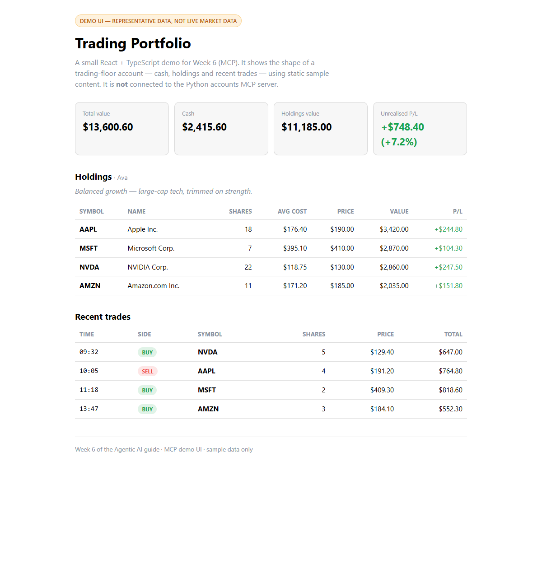

Week 6 · Project Build — the Trading Floor, Step by Step
Build the trading-floor system from an empty folder with uv: a custom accounts MCP server, market-data servers, autonomous trader agents and a scheduler, plus a small React demo UI that shows portfolios.
Build it yourself · Python + uv (+ a React demo UI)This is the Week 6 project: the Trading Floor — four autonomous trader agents, each with its own strategy and its own portfolio, that research the market and buy and sell on a schedule. They do everything through MCP (the Model Context Protocol): an accounts server built with FastMCP exposes the portfolio as tools and a resource; a market server provides prices; and the agents use them as MCP clients. A scheduler wakes the traders every few minutes. That system — your own MCP servers plus agents that use them — is the Week 6 build.
MCP is language-neutral, but the course's trading floor is written in Python, so the two tracks are not the same program in two languages:
- Track A — Python + uv: the real project. A FastMCP accounts server, a market-data server, trader agents, and a scheduler that runs them.
- Track B — a small React demo UI: not a port of the trading floor, but a TypeScript page that shows a sample portfolio — total value, cash, holdings and recent trades — so the week has a UI to look at.
The core idea of Track A is your own tools behind MCP servers. You write plain Python functions, decorate them with @mcp.tool(), and FastMCP turns them into an MCP server an agent can launch and call. Each trader Agent from the OpenAI Agents SDK is handed a list of MCP servers (accounts, market, push, plus research servers), discovers their tools, and calls them to do its job — the same pattern whether the server is yours or someone else's.
Build it step by step
A runnable slice of Week 6 lives in week6-py/. It runs with no paid keys: the agent uses a local Ollama model (llama3.2) and market prices are faked, so you can watch an agent build and call a real MCP server:
# 1. Install Ollama from https://ollama.com, then pull the model it uses
ollama pull llama3.2
# 2. Install dependencies (UV_NATIVE_TLS=1 avoids corporate TLS errors)
cd week6-py
UV_NATIVE_TLS=1 uv sync
# 3. Run the demo
uv run python src/accounts.py # the Account business logic on its own (no agent, no MCP)
uv run python src/client_demo.py # an agent launches the MCP server over stdio and calls its toolsWhat was verified locally against Ollama: building the accounts server with FastMCP("accounts_server") exposing get_balance, get_holdings, buy_shares and sell_shares as tools plus a read-only account resource; an Agents SDK agent on Ollama launching that server as a subprocess over the stdio transport with MCPServerStdio, listing its tools, and actually invoking them (get_balance, buy_shares, get_holdings); and a direct (no-LLM) MCP client session calling the same tools, so the server is proven even when the small model has a bad run. What was shown as in the course but not run here: Polygon market data and Brave search (paid keys), push notifications, and the full multi-agent trading floor with its scheduler and Gradio app — that system needs those keys and runs on a long schedule. Honest caveats: market prices are FAKE fixed values (the real course calls Polygon.io), and llama3.2 is small — it sometimes emits raw tool-call JSON instead of a tidy sentence, which is exactly why the direct-call proof is included.
New to MCP? What it is and why it matters
MCP, the Model Context Protocol, is a standard way to plug tools and data into an agent — the instructor calls it "the USB-C of agentic AI". A server exposes tools and resources; a host (your agent app) runs a client that connects to it and calls them. Because the protocol is fixed, an agent can use any MCP server — one you wrote, one from a marketplace, or an official one — the same way. In this project you write your own accounts server and also consume ready-made servers (fetch, search, memory), all through the one protocol.
Track A - Python + uv (FastMCP accounts server + market + traders + scheduler)
- Scaffold the project. Either start fresh with
uv init trading-floor, or clone the course repo and open its6_mcpfolder.uvcreates the project and manages a local.venvfor you. - Add the dependencies:
uv add openai-agents "mcp<2" openai pydantic python-dotenv.openai-agentsis the SDK whoseAgentconsumes MCP servers, andmcpcarriesFastMCP(pinned below version 2, where it was renamed). The ready-made servers are launched vianpx/uvx, so they need no extra Python packages. - Create a
.envfile with your keys (never commit it). The course uses hosted models and paid data; to run the slice free, point the agent at Ollama as in Week 2:OPENAI_API_KEY=sk-... POLYGON_API_KEY=your-polygon-key BRAVE_API_KEY=your-brave-key PUSHOVER_TOKEN=your-pushover-token PUSHOVER_USER=your-pushover-user RUN_EVERY_N_MINUTES=60 - Write the account business logic,
accounts.py. AnAccountPydantic model with a cashbalance, aholdingsmap, a list oftransactions, and methodsbuy_shares,sell_shares,portfolio_valueandreport(a JSON string), backed by a small SQLite store so state survives across the separate calls the server makes. Prices come from aget_share_pricehelper — Polygon in the course, a fixed fake value in the runnable slice. - Build the accounts MCP server,
accounts_server.py. Createmcp = FastMCP("accounts_server"), then decorate async functions with@mcp.tool()—get_balance,get_holdings,buy_shares(name, symbol, quantity, rationale),sell_shares(...)— each delegating toAccount.get(name). Add an@mcp.resource("accounts://accounts_server/{name}")returning the account report, and end withmcp.run(transport="stdio")so a client can launch it over stdin/stdout. - Add market data and the server list. Write
market.py/market_server.py(a market-data MCP server; Polygon when a key is set, a local server otherwise) andmcp_params.py, which lists each agent's servers: the trader getsaccounts_server,push_serverand the market server; the researcher gets the ready-mademcp-server-fetch,@modelcontextprotocol/server-brave-searchandmcp-memory-libsqlservers launched viauvx/npx. - Write the trader agents,
traders.py. ATraderbuilds a Researcher agent exposed as a tool (researcher.as_tool(...)) and a traderAgentthat is given the trader MCP servers and the researcher tool.run()loads the account and strategy from their resources, sends a trade-or-rebalance message, and runs the agent withRunner.run(...), alternating between trading and rebalancing each cycle. - Write the scheduler,
trading_floor.py. Create four named traders — Warren Patience, George Bold, Ray Systematic, Cathie Crypto — and loop forever: if the market is open (orRUN_EVEN_WHEN_MARKET_IS_CLOSED),asyncio.gatherevery trader'srun(), thenasyncio.sleep(RUN_EVERY_N_MINUTES * 60). A Gradioapp.pyshows each trader's portfolio and activity. - Run it:
uv run python trading_floor.pystarts the scheduler, anduv run app.pyopens the dashboard. (The full floor needs the Polygon/Brave keys and runs long, which is whyweek6-py/verifies the accounts server and an agent calling its tools instead.)
The full, verified code for the accounts server, the market params, the traders and the scheduler is embedded line by line on the Day 2, Day 4 and Day 5 pages — build those first; this page is the map that joins them into one project.
accounts_server sits alongside the market and push servers — all the same protocol, so the agent treats them alike.week6-py/: the agent launches your server, lists its tools, and calls them. A second direct client calls the same tools with no LLM, so the server is proven even on a rough model run.asyncio.gather, then sleeps until the next cycle.Track B - React demo UI
Track B is the real week6-ts/ project, and it is deliberately a demo UI, not the trading floor in TypeScript. MCP is language-neutral — there is an official TypeScript MCP SDK (@modelcontextprotocol/sdk) and the JS Agents SDK can consume MCP servers too — but this page ports nothing. It is a static React SPA whose numbers live in src/data.ts and are not connected to the Python accounts server; it only shows the shape of a portfolio.
- Scaffold a React + TypeScript app with Vite:
npm create vite@latest week6-ts -- --template react-ts cd week6-ts npm install - Keep the dependencies tiny. It is a static page, so it needs only
reactandreact-domat runtime, plus the Vite / TypeScript dev tools from the template. No server, no MCP client, no network call. - Create
src/data.ts— the representative numbers. DeclareHoldingandTradeinterfaces, atrader(name + strategy), acashfigure, aholdingsarray (symbol, shares, average cost, current price) and arecentTradesarray. These mirror the shape of a trading-floor account but are clearly made-up demo values. - Build
src/App.tsx. Render summary cards (total portfolio value = cash + holdings, and cash on hand), a holdings table (symbol, shares, average cost, price, value), and a recent-trades table (time, side, symbol, shares, price). Compute the totals fromdata.tsso the cards stay consistent with the tables. - Style it in
src/styles.csswith light/dark-aware colours and clear BUY/SELL tags, so the dashboard reads well in either theme. - Check and preview. Run
npm run typecheckandnpm run build(both must be clean), thennpm run previewto serve the built page for the screenshot.
data.ts — nothing is fetched from the MCP server.Built and previewed, the demo page looks like this:

src/App.tsx), serving static content from src/data.ts. It shows the shape of a trading-floor account; it is not connected to the Python accounts MCP server.- The Trading Floor: four trader agents with their own strategies and portfolios that research and trade through MCP servers on a schedule.
- Your own
FastMCPaccounts server —get_balance,get_holdings,buy_shares,sell_sharesas tools and an account report as a resource — plus market and push servers. - Trader agents (OpenAI Agents SDK) that consume those servers over the stdio transport, and a
trading_floor.pyscheduler that runs them every N minutes. - Track A in Python + uv is the real project; a free local slice in
week6-py/verifies the accounts server and an agent calling its tools against Ollama. - Track B (
week6-ts/) is a small React demo UI showing a sample portfolio — clearly labelled as representative, not a port of the trading floor. - Full, line-by-line code is on the Day 2, Day 4 and Day 5 pages.